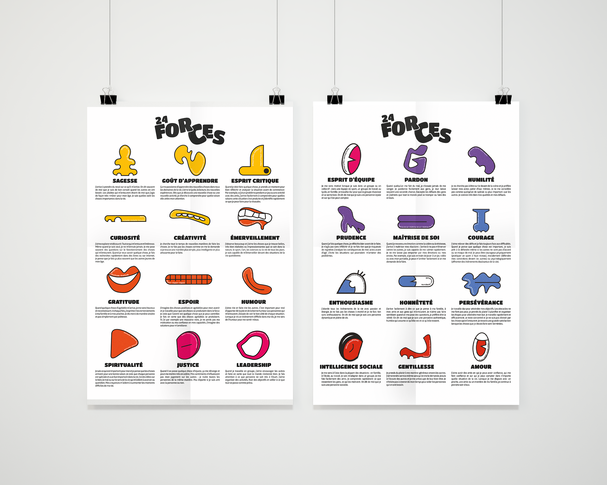
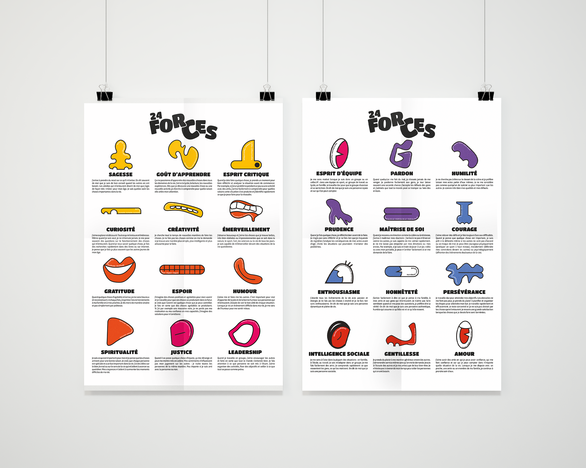

05_LES_24_FORCES
Dispositif de communication
Conception d’un dispositif de communication sur les 24 forces
Un dispositif permettant de découvrir la santé mentale auprès des lycéens en s’appuyant sur un outil de la psychologie positive, les 24 forces. Cherchant l’appropriation de cet outil comme un support de bien être psychologique pour soi même mais aussi pour les autres qui nous entoure. Appropriation des 24 forces au travers d’une décomposition corporelle. (une force = un trait de visage graphique). Chacun s’approprie ses forces en formant son propre monstre. Composition sans règle et sans idéal à atteindre. Assumer une certaine absurdité, une certaine différence que l’on à tous via ces forces

 
